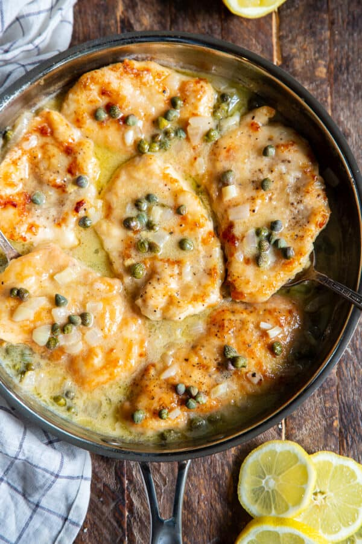

Home
Chicken Piccata Recipe

What Is Chicken Piccata?
Chicken Piccata is an Italian dish featuring pan-fried chicken in a tasty, lemon caper sauce. The chicken is pounded thinly and dredged in flour before lightly frying in a pan; the dish is finished with a simple sauce of lemons, butter, capers, and parsley. This dish is sure to become a weeknight favorite!
Ingredients for Chicken Piccata:
- Skinless, Boneless Chicken Breasts
- Flour
- Butter
- Lemon Zest
- Lemon Juice
- Capers
- Parmesan Cheese
- Fresh Parsley
- Italian Seasoning Blend
- White Wine
How to Make Chicken Piccata:
- Pound chicken breasts using meat tenderizer until somewhat flattened, 1/2 inch thick.
- Add flour to bowl and combine with some of lemon zest, some parmesan cheese, and italian seasoning blend.
- Take chicken breasts and dredge in flour mixture, shaking off excess flour.
- Put 12 inch pan on stove on medium heat. Add olive oil or vegetable oil to pan, enough to cover entire bottom of pan.
- Add chicken to pan and let cook for 2-3 minutes on one side, then flip. Continue flipping chicken every 2 minutes until both sides are golden brown.
- Place cooked chicken on oven tray with wire rack so leftover oil can drip off chicken.
- Once all chicken is finished cooking, use white wine to deglaze pan and reduce to begin making sauce. Add butter, lemon juice, lemon zest, and capers to white wine and reduce further until desired consistency.
- Add chicken back to pan and toss in wine-butter sauce.
Dig In and Enjoy!
Thank you for checking out my chicken piccata recipe. If you enjoyed this recipe, you can check out my other recipes here.